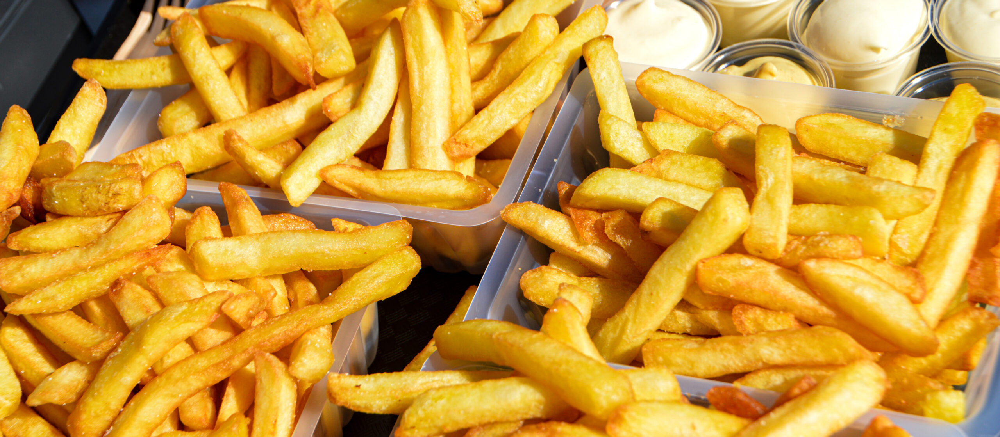

Odin recipes
Fries

french fries, side dish or snack typically made from deep-fried potatoes that have been cut into various shapes, especially thin strips. Fries are often salted and served with other items, including ketchup, mayonnaise, or vinegar.
Ingredients:
- Potatoes
- Vegetable Oil
- Salt
Steps:
- Slice the potatoes 1/2 inches thick.
- Soak them in cold water for atleast an hour.
- Rinse them twice with cold water and pat them completely dry.
- Heat the oil to 300 degrees.
- Increase heat to 400 degeres.
- Place them on paper towels and sprinkle immediately with salt.